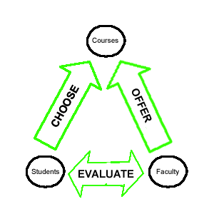

Modeling Concepts: New Techniques for IA in a Web 2.0 World
Sitemaps are inadequate to fully communicate the complex structures needed in content management. Happily, I was privileged to hear Dan Brown's thoughts on how to use a concept model (CM) to capture and communicate some of these structures. Dan defines 4 main formats for CMs, lists the steps in CM creation as it fits into the design process, and includes some insider tips along the way.
This workshop was given by Dan Brown on March 19, 2009 at the IA Summit in Memphis, TN. Dan also gave a presentation on Design Rules that was very useful for designers using content management systems.
How designers can use concept models
- Visually define and clarify:
- relationships between concepts
- priorities (i.e. strategy)
- structure
- context
- domain
- Facilitate discussion, helping clients and designers to think through a problem together
- Can be informal (napkin sketching) or formal (part of a deliverable)
- Breaks down "default thinking" (i.e. inside the box, always-been-this-way)
What is a concept model?
The basic idea is using circles and lines (no drawing skill necessary) to represent nouns and verbs. The nouns are concepts, and the verbs are the connecting relationships. Dan recommends using less than 25 concepts and relationships to avoid overwhelming viewers.
There are four main formats for drawing concept models: hub and spoke, backbone, core concepts, and relationship-focused.
Hub and spoke
The hub and spoke format assumes ONE central concept as the hub with related concepts and relationships circling around the center.

Backbone
The backbone format tells a clear story with the main theme (often across the top or through the middle of the model like a spine). In this case, the theme is "A Flickr USER takes PHOTOS of a SUBJECT." All other concepts and relationships support that main theme's concepts and relationships.

Core concepts
The core concepts format assumes a few (<4) core concepts between which all other concepts and relationships connect.

Relationship-focused
The relationship-focused format, unlike the other formats listed, does not focus on the concepts. It visually highlights the relationships portion of the model. In this model, the concept circles are usually very tiny and the relationship lines/arrows are big and attention-grabbing.

Steps in creating a concept model
There are 2 main types of decisions to be made when creating a CM:
- planning
- content
Planning
Designers may need to consider the following before starting a concept model:
- Audience
- Theme
- Collaboration: team and stakeholder feedback
- Purpose: often effects the format chosen
- Maintenance: will updates need to be made? what format will allow for this?
- Research: interviews of domain experts and elicitation of client & user needs
Content
After planning, designers will likely need to consider the following about their CM:
- Scope: how many concepts and relationships will be included? what is the big picture/setting?
- Detail: level of granularity to display for each concept
- Abstraction: level to include (based on audience characteristics)
- Type of CM: one of the 4 formats mentioned above, or some other type of model?
- Relationships: avoid the belonging relationship (as it doesn't really communicate much); and avoid using passive verbs
Content models in the design Process
CMs are useful at various stages in the design process.
- Discovery
- a. Used to understand requirements (problem) and/or context (domain)
- b. Impacts: mostly relationships; little visual language at this stage
- Strategy
- a. Used to set overall context; scope/priority; vision or effect on world
- b. Impacts: scope (not detailed); relationships with known items
- Design
- a. Used to structure underlying user experience.
- b. Impacts: scope (templates); roles; relationship re: navigation; abstract content types
For more information
- Back of the napkin = do lots more informal brainstorming on PAPER
- Made to stick = show how what we do as business is Distinct